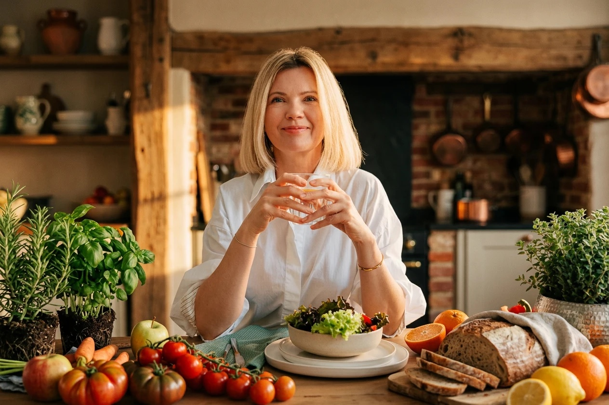

Vorwort
Ich bin Martina – Food-Fotografin, Rezeptentwicklerin, Ernährungscoach und die Person hinter Atelier for Food. Mein Weg begann mit Geschmack. Mit Ästhetik und mit dem Anspruch, Lebensmittel sichtbar zu machen.

Durch meine Arbeit in der Hotellerie, Gastronomie und Food-Fotografie habe ich gelernt, wie stark Essen wirken kann: visuell, geschmacklich und emotional.
Ich habe mich intensiv mit Lebensmitteln beschäftigt. Mit ihrer Qualität. Mit ihrer Wirkung und mit ihrem Zusammenspiel. Ich habe Rezepte entwickelt, Produkte begleitet und immer wieder neue Kombinationen ausprobiert.

Doch irgendwann hat sich mein Blick verändert.
Es ging für mich nicht mehr nur darum, wie etwas aussieht oder schmeckt. Sondern auch darum, was es im Körper bewirkt.
Ein persönlicher gesundheitlicher Wendepunkt hat diesen Blick noch einmal vertieft. Plötzlich war Gesundheit kein abstraktes Thema mehr. Sondern etwas, das meinen Alltag direkt betroffen hat.
Man merkt oft erst, wie wertvoll Gesundheit ist,
wenn sie nicht mehr einfach funktioniert.
Wenn Energie fehlt, der Körper lauter wird, der Stress stärker spürbar wird. Wenn hormonelle Veränderungen plötzlich nicht mehr abstrakt sind und wenn Dinge, die früher selbstverständlich waren, plötzlich Kraft kosten.
Dann geht es nicht mehr nur darum, gut auszusehen oder sich „irgendwie gesund“ zu ernähren. Dann geht es darum, den eigenen Körper ernst zu nehmen. Zu verstehen, was ihn unterstützt, was ihn stabilisiert, was ihn nährt und was er braucht, um langfristig stark, klar und vital zu bleiben.
„Wenn Gesundheit nicht mehr selbstverständlich ist, zählt nicht nur, dass du isst – sondern wie du dich ernährst.“
Seitdem sehe ich Ernährung anders.
Nicht als kurzfristige Lösung, nicht als Kontrolle, nicht als Perfektion. Sondern als einen der stärksten Hebel, die wir jeden Tag nutzen können. Mit jeder Mahlzeit. Mit jeder Kombination. Mit allem, was wir regelmäßig wiederholen.
Denn Ernährung wirkt nicht nur im Moment. Sie prägt, wie wir uns fühlen, wie stabil unsere Energie ist, wie gut wir mit Belastung umgehen und wie wir unseren Körper langfristig unterstützen.
Genau deshalb habe ich dieses E-Book geschrieben. Nicht, um dir noch mehr Regeln zu geben. Sondern um dir Orientierung zu geben. Einen Wegweiser. Eine Struktur, einen einfachen Einstieg. Damit du verstehst, welche Lebensmittel dich wirklich unterstützen. Welche Kombinationen dich länger tragen und wie du Mahlzeiten so aufbaust, dass sie nicht nur heute gut tun – sondern langfristig zu deinem Leben passen.

Denn Longevity beginnt nicht irgendwann.
Sie beginnt mit dem, was du jeden Tag wiederholst.
Eat smart. Age slow.